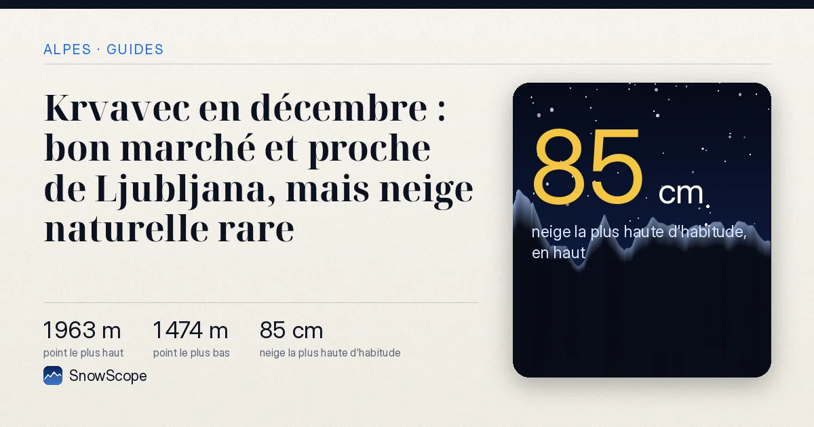

Krvavec en décembre : bon marché et proche de Ljubljana, mais neige naturelle rare
Krvavec se situe à 20 km au nord de Ljubljana et coûte moins cher que presque toute station alpine : 47 EUR la journée, 205 EUR les 6 jours. L'énigme, c'est la neige. Sur une mi-montagne typique le 15 décembre, le sol ne retient que 13 cm sur notre historique de 46 hivers, et dans 11 de ces hivers il était nu.
Consultez les prévisions neige en temps réel pour Krvavec sur l'application SnowScopeHauteurs de neige, alertes poudreuse et carte 3D, gratuitement.
Pourquoi Krvavec séduit au début de la saison
La station atteint 1 963 m, respectable pour la Slovénie, avec 13 remontées et 16 km de pistes. Pour les skieurs de Ljubljana, il faut moins d'une heure de route. Les tarifs de début de saison—45 EUR en prévente, 47 EUR au prix fort—sont tentants quand la vallée reçoit les premières neiges. Mais Krvavec se situe sur le versant sud ensoleillé des Alpes, où le froid de décembre est faible et la neige qui tombe fond souvent.
La dénivellation cartographiée de 488 m est modeste, et c'est important. L'altitude supérieure garde la neige plus longtemps, mais la mi-montagne à 1 718 m est où la plupart des skieurs passent leur temps, et c'est là où l'historique montre le problème.


Neige de décembre : les chiffres qui comptent
Le 15 décembre sur un hiver typique, la mi-montagne retient 13 cm. Seulement 24 % de nos 46 hivers avaient 30 cm ou plus à mi-montagne entre le 15 et le 21 décembre, et 28 % à la semaine de Noël. Le sommet (1 963 m) se débrouille mieux—16 cm typiquement le 15 décembre, 28 % des hivers avec 30 cm entre le 15 et le 21 décembre, 33 % à la semaine de Noël—mais beaucoup de skieurs ne passent pas toute la journée au sommet.
La tendance est à la baisse. L'épaisseur de neige en décembre à mi-montagne était en moyenne de 15 cm pendant les 15 premiers hivers de l'historique (1980–81 à 1994–95) mais est tombée à 4 cm pendant les 15 derniers (2011–12 à 2025–26). À la semaine de Noël, 47 % des hivers anciens avaient 30 cm à mi-montagne contre seulement 13 % récemment. L'hiver dernier n'a apporté aucune neige naturelle le 15 décembre du tout.
Quand vous pourriez trouver assez de neige
Le premier jour habituel avec 30 cm à mi-montagne est le 7 janvier, près d'un mois après le début de la saison. Avant cela, Krvavec s'appuie sur la neige artificielle et l'entretien printanier. Si la station a bien préparé les pistes, une journée de décembre ici offre un excellent rapport qualité-prix. Si vous comptez sur la neige naturelle, vous comptez sur la chance.
La base (1 474 m) est pire : un 15 décembre typique n'a que 10 cm, et 11 de nos 46 hivers ont vu le sol nu là-bas. C'est important si un coup de chaleur ramollit la peu de neige tombée au début du mois.
Valeur et ce que cela signifie en pratique
47 EUR la journée et 205 EUR les 6 jours (prévente 45 EUR) sont parmi les tarifs les plus bas d'Europe. Comparez cela au Mölltaler Gletscher proche en Autriche, qui coûte 332 EUR les 6 jours (tarif début de saison 2025–26) et se situe à 2 103 m de base. Le glacier avait 66 cm sur un 15 décembre typique et 91 % des hivers avec 30 cm mi-décembre. L'écart de prix reflète l'écart de neige.
Pour les skieurs vivant à Ljubljana, la stratégie est simple : réservez une journée à Krvavec quand le rapport piste de la station montre une base skiable, et réservez le glacier pour une semaine fixe si décembre compte pour vos vacances.
Que préparer et vérifier avant de partir
Avant de dépenser de l'argent pour une semaine de décembre à Krvavec, lisez le rapport piste et neige quotidien de la station. La neige naturelle a couvert la mi-montagne avec 30 cm dans seulement 24 % de nos hivers mi-décembre, donc un rapport de la station elle-même est votre meilleur guide pour savoir si la neige artificielle et l'entretien ont rendu les pistes skiables.
L'Agence slovène de l'environnement publie le bulletin officiel d'avalanches pour la région. Si vous envisagez d'explorer hors-piste après une rare chute de neige, lisez d'abord le bulletin, même si la faible neige de décembre ici rend le risque d'avalanche inhabituel.
Conseils aux skieurs
- Réservez jour par jour en décembre plutôt qu'un forfait 6 jours, sauf si le rapport en direct de la station affiche 30 cm ou plus à mi-montagne.
- Attendez-vous au sol nu : dans 11 des 46 hivers, la mi-montagne était nue le 15 décembre, donc consultez le rapport de la station le matin où vous prévoyez de visiter.
- Si une semaine de ski de décembre est essentielle, réservez le Mölltaler Gletscher à la place ; il avait 30 cm ou plus dans 96 % des semaines de Noël sur 46 hivers.
- Pour les journées hors-piste après une tempête de neige de décembre, consultez le bulletin d'avalanches slovène avant de vous aventurer en dehors des pistes balisées.
À propos de ces chiffres
Les hauteurs de neige des stations sont la neige la plus épaisse sur le haut du domaine à la date indiquée ; ce sont des estimations pour une zone, pas une mesure en un point. Les prévisions peuvent changer. Consultez toujours le bulletin d'avalanche officiel avant le hors-piste.
Bulletins d'avalanche officiels: ARSO – Slovenian Environment Agency
Citer ce bulletin
Pour la recherche, l'enseignement ou la presse : chiffres et graphiques réutilisables librement sous CC BY 4.0 avec cette citation.
SnowScope (2026), Krvavec en décembre : bon marché et proche de Ljubljana, mais neige naturelle rare, https://snowscope.app/blog/fr/2026/11/krvavec-december-skiing-ljubljana-honest-snow.html, consulté le 2026-11-14
SnowScope (Atlas Labs). (2026, November 14). Krvavec en décembre : bon marché et proche de Ljubljana, mais neige naturelle rare. SnowScope snow reports. https://snowscope.app/blog/fr/2026/11/krvavec-december-skiing-ljubljana-honest-snow.html
BibTeX
@misc{snowscope2026krvavecdecemberskiinglju,
author = {{SnowScope (Atlas Labs)}},
title = {Krvavec en décembre : bon marché et proche de Ljubljana, mais neige naturelle rare},
year = {2026},
month = nov,
howpublished = {\url{https://snowscope.app/blog/fr/2026/11/krvavec-december-skiing-ljubljana-honest-snow.html}},
note = {Published 2026-11-14 20:54 UTC; accessed 2026-11-14}
}· CC BY 4.0 · Méthodes, données et outils →
Krvavec : neige et température selon l'altitude, cet hiver vs l'hiver dernier (outils) →
Suivre Krvavec
Gratuit : un message quand la neige arrive, et la météo chaque matin.